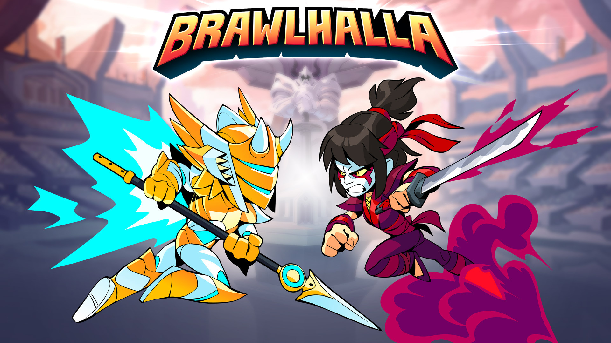
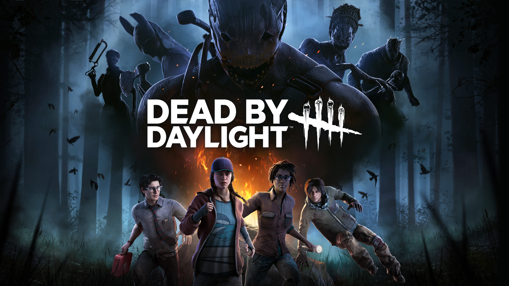
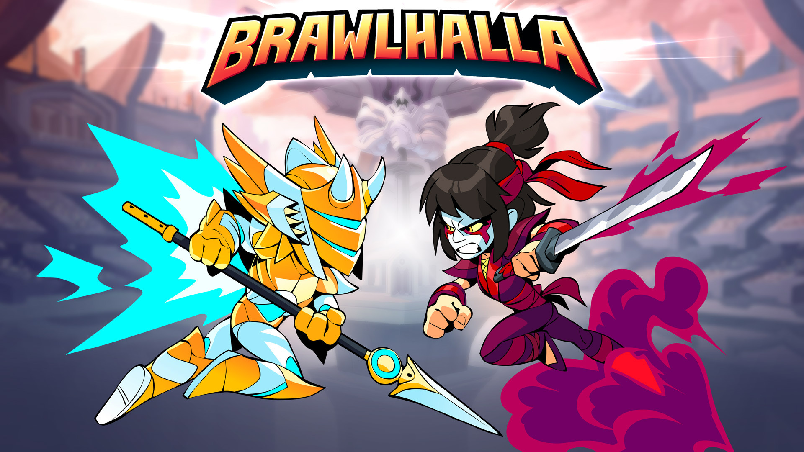
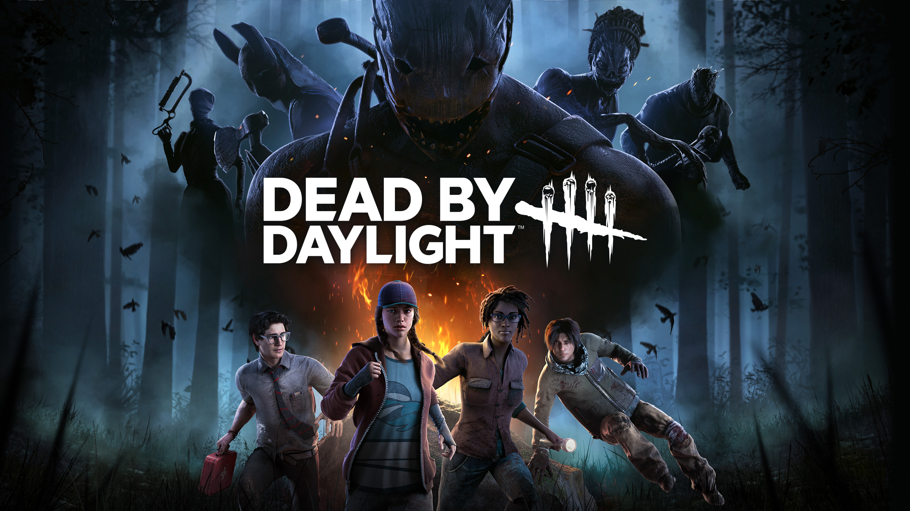
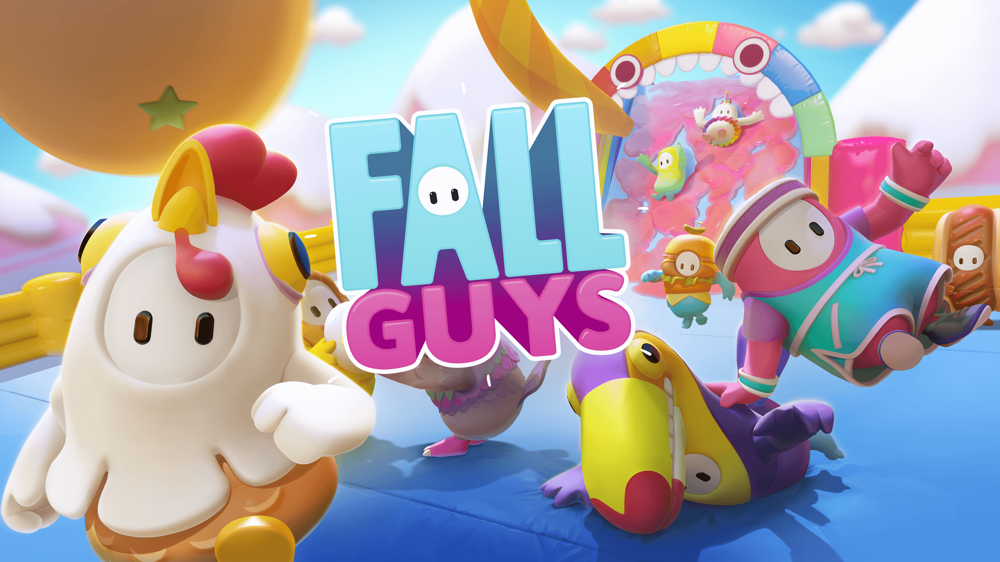
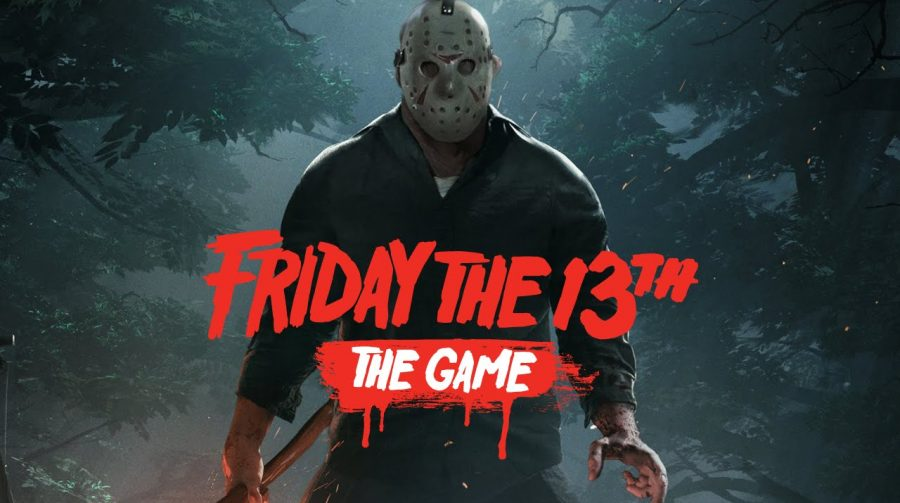
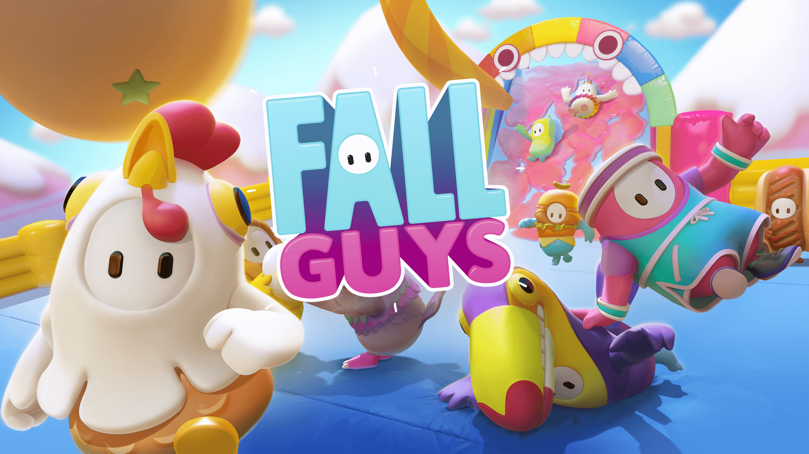
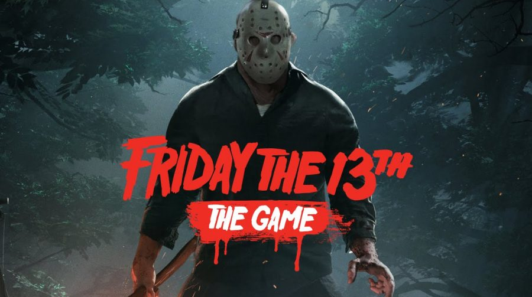

Renan Magalhães Lage
Bem Vindo(a) ao meu site pessoal
Renan
Discente de Ciência da Computação
Tenho 21 anos e nasci em Nova Era – MG, cidade localizada perto da região do Vale do Aço do estado. Em 2021, entrei para o curso Ciência da Computação na Universidade Federal de Alfenas – UNIFAL, atualmente estou cursando o 5° Período.
Sobre Mim
Inicialmente eu pretendia cursar Engenharia Civil ou Arquitetura, entretanto, pela curiosidade e interesse na área de TI, optei em cursar Ciência da Computação. Antes de entrar na UNIFAL, estudei por um mês na FUMEC em Belo Horizonte e foi nesse período em que tive o meu primeiro contato com a programação e logo já me encantei com a área.
Curiosidades
Quando criança praticava natação, porém, com o passar dos anos deixou de ser um passatempo para ser uma obrigação, o que ocasionou desinteresse da minha parte.
Nunca gostei muito de ler livros, mas, em 2020, durante a pandemia, comecei a ler Percy Jackson. Fiquei fascinado com o livro e li todos as obras posteriores da saga.
Interesses
Séries
Sou apaixonado em assistir séries, meu gênero favorito é drama de mistério e ficção. Quando eu tinha uns 14 anos, assisti Revenge, foi a primeira série que eu acompanhei e até hoje continua sendo a minha favorita.
Algumas das minhas séries favoritas:
Músicas
Um dos meus passatempos favoritos é escutar músicas. Escuto a qualquer momento, na academia, no banho, no ônibus e até mesmo estudando para prova.
Meus álbuns favoritos:
Jogos
Além de jogos de tabuleiros, eu adoro jogos para computador, principalmente se for multiplayer.
Meus jogos favoritos:
 



 



Formação Acadêmica
Ensino Médio
Escola Estadual Luiz Prisco de Braga – MG, 2017 – 2019
Inglês
Certificado pelo MET - Michigan English Test, FISK - 2019
Ciência da Computação
UNIFAL - MG, 2021